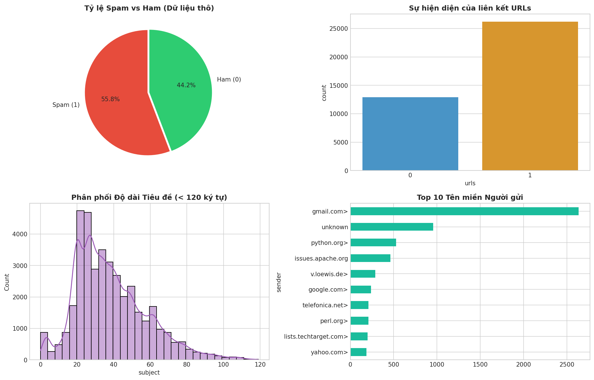
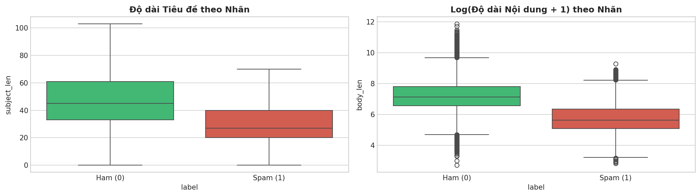

Phân tích tập dữ liệu thô CEAS_08, xử lý khuyết thiếu, bóc trần thủ thuật ngụy trang và khử trùng lặp (Zero Duplicate Leakage).
Bộ dữ liệu gốc được cung cấp từ Hội nghị quốc tế về Chống thư rác (CEAS) gồm 39.154 email với 7 thuộc tính cơ bản:
| Thuộc tính | Ý nghĩa | Khuyết thiếu (Null) | Đánh giá chất lượng |
|---|---|---|---|
sender | Địa chỉ email người gửi | 0 dòng | Đầy đủ 100% |
receiver | Địa chỉ email người nhận | 462 dòng (1.18%) | Điền giá trị 'unknown' |
date | Thời điểm gửi thư | 0 dòng | Đầy đủ 100% |
subject | Tiêu đề email | 28 dòng (0.07%) | Điền chuỗi rỗng '' an toàn |
body | Nội dung email | 0 dòng | Đầy đủ 100% |
label | Nhãn phân loại (0: Ham, 1: Spam) | 0 dòng | Biến mục tiêu sạch |
urls | Có chứa đường dẫn liên kết hay không | 0 dòng | Đầy đủ 100% |
Khảo sát độc lập 4 thuộc tính cốt lõi để nắm bắt đặc trưng phân bố:

gmail.com>), các tài khoản khuyết danh (unknown) và các hệ thống phát triển mã nguồn mở (python.org>, issues.apache.org).So sánh tương quan giữa độ dài văn bản với hành vi phát tán thư rác:

log1p thay vì xóa bỏ.Khi so khớp toàn bộ cột thô ban đầu, tỷ lệ trùng lặp bằng 0. Tuy nhiên, spammer sử dụng kỹ thuật chèn ngẫu nhiên mã HTML ẩn và đổi tham số URL động. Khi hàm clean_text lột bỏ toàn bộ thẻ HTML và URL, hàng nghìn bức thư giống hệt nhau lộ diện.
Kết quả xử lý:
clean_text: Giải mã ký tự HTML unescape, xóa thẻ HTML <...>, xóa link HTTP/HTTPS, xóa ký tự đặc biệt, chuyển chữ thường và lọc từ dừng Stopwords tiếng Anh.data/processed/clean_emails.csv phục vụ Chặng 2. Sau khi lột sạch lớp ngụy trang trùng lặp, tỷ lệ nhãn đạt trạng thái cân bằng tự nhiên lý tưởng: Ham 52.3% (17.094 email) và Spam 47.7% (15.566 email).